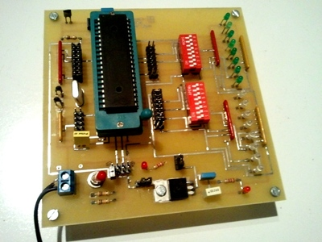
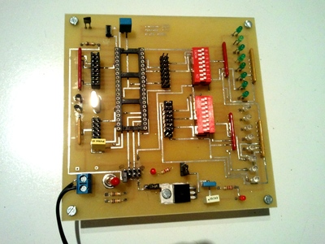

Le minilab ressempble à peu prêt à ça :

Les sources
Vous pouvez télécharger les schémas électriques ainsi que le typon depuis un des trois liens suivant :
- mini-lab version pdf
- [mini-lab version tar.gz] (/content/misc/2017/03/testboardpic_2011-09-22.tar.gz)
- [mini-lab version zip] (/content/misc/2017/03/testboardpic_2011-09-22.zip)
Liste des composants
Pour ce qui est de la liste des composants :
- 1 Régulateur de tension 7805 (REG)
- 4 résistances 10k (RP + R_MCLR + RUSB1 + RUSB2)
- 1 interrupteur inverseur à levier (S1)
- 1 condensateur 330nF (C1)
- 1 condensateur 100nF (C2)
- 1 connecteur COCMM554170 (CONN)
- 1 Quartz 20 MHz (QUARTZ)
- 2 condensateurs 15 pF (C4 et C5)
- 1 poussoir COAPPHAP3362 (S_CLR)
- 1 condensateur 100pF (c_MCLR)
- 1 condensateur 1µF (C0)
- 1 condensateur 0,47 µF (CUSB)
- 2 supports de CI 16 broches
- 1 support de CI 40 broches
- 17 led 3mm (je vous laisse panacher les couleurs)
- 2 réseaux de résistances 10K RESIL8110K (RD1 + RB1)
- 2 réseaux de résistances 1K8 RESIL811K8 (RD0 + RB0)
- 1 réseau de résistances 10k RESIL5110K (RC0)
- 1 réseau de résistances 10k RESIL9110K (RA0)
- 2 Switchs SW DIP8 COAPDS08
- 2 rail de broches (2 rangées) de 40 éléments (que vous découperez) COANA61254-807G
- 30 jumpers ( pour ponter les broches des rails) COW8013T50N
- 1 alimentation 5V; faites les brocantes et les vide-greniers pour trouver un adaptateur secteur pas cher !
Fabrication
Quand j’ai monté mon minilab, j’habitais Toulouse. Du coup, toutes les références sont celles chez Electronique-diffusion(http://www.electronique-diffusion.fr/toulouse.php).
C’est une plaque double face. Je l’ai fait réaliser par une entreprise. La gravure (sans les perçages) m’a coûté 10€. Je vous l’accorde, je n’ai jamais retrouvé ces prix. En générale, on vous réclamera quatre fois ça.
il est fort probable qu’il y ai un problème d’échelle sur le typon. Vérifiez bien après impression (surtout pour l’implantation du microcontrôleur) ! Je vous dis ça, parce que je me suis fait avoir.
Le microcontrôleur, ainsi que les interrupteurs switch seront montés sur des supports de circuits intégrés. C’est plus faclie pour souder les deux faces.
Le quartz est un 20MHz.
On prendra des led de 3mm
Ne vous plantez pas
Commencez par un montage à blanc pour vous assurer que tous les perçages sont au bon diamètre.
Soudez en premier tous les bridges (= les ponts électriques entre la face A et le face B). Il faut fouiller pour les retrouver; ce sont toutes les pastilles sur lesquelles on ne soude pas de composants. N’en oubliez aucun ! Certains seront masqués par les supports du microcontrôleur et des switchs.
Soudez ensuite les rails de broches (entre les switchs et le microcontrôleur). N’oubliez pas qu’il y a très souvent des soudures au dessus et en dessous.
Soudez les supports de switchs, le support du micro, les réseaux de résistances, puis tout le reste. Gardez les led pour la fin.
Avant de plaquer le régulateur de tension 7805 contre la plaque, j’ai inséré un scotch (juste un doigt) pour l’isoler des pistes (au moment de visser)

Fouillez un peu dans les schémas
Pour ça, il va falloir installer quelques petites choses. Commencez par installer gEDA. C’est une suite logicielle pour faire de la conception électronique sous Linux
sudo apt-get install geda geda-utils pcb
Si vous voulez regénérer entièrement le projet, vous aurez besoin de la commande ps2pdf. il faut installer le package texlive-base qui est relativement lourd:
sudo apt-get install texlive-base
Pour éditer les schémas électriques, lancez :
gschem sch/pic.sch
Les schémas électriques sont organisés en plusieurs fichiers du dossier sch:
analog_io.sch: Les entrées et sorties analogiquesdigital_io.sch: les entrées et sorties numériquespic.sch: le microcontrôleur lui-même (du moins, sont support)usb.sch: la prise USBmiscellaneous.sch: l’alimentation régulée, le quartz, …
Pour modifier l’implantation des composants, lancez pcb :
pcb pcb/test_board.pcb
Vous pouvez retrouver toutes les informations relatives à ces outils sur mon post